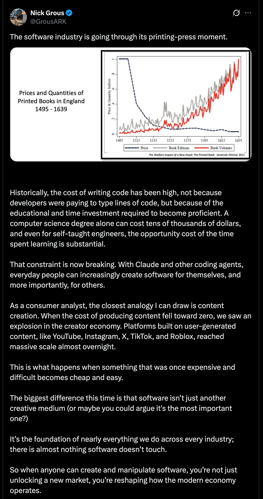
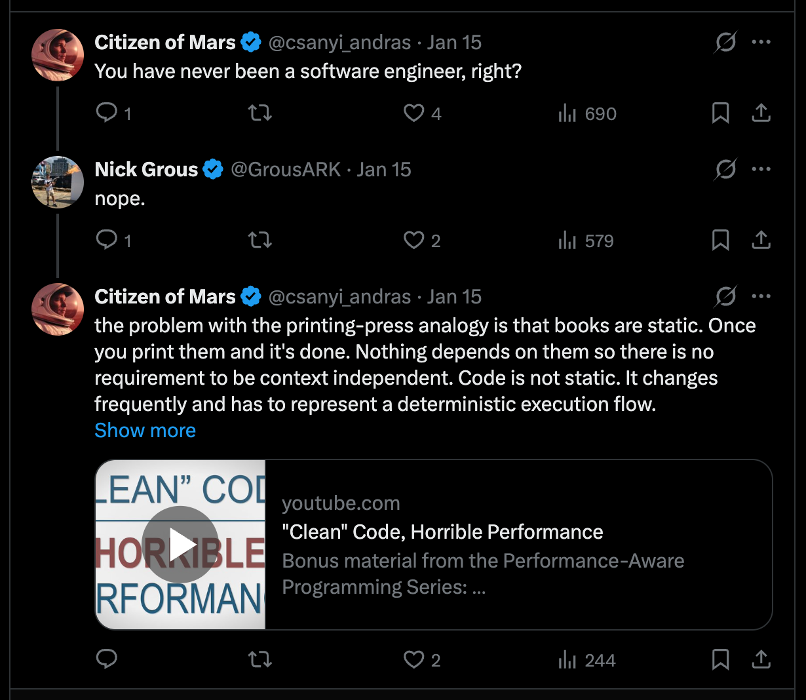

Printing press analogy for AI
A few days back I read the post below and it just didn’t feel right. I commented on it a few hours later, but it still lives rent-free in my head. My issue with it is that it feels superficially correct, but still sloppy and I want to figure out why it feels that way. This is a repeating phenomenon in my life. There are things that feel correct, but I have the feeling that they are just wrong and after a while it turns out my hunch was right. This happens mainly with corporate-level management decisions. This should not be a surprise since I have been working for big corporations for a long time and have held many different positions giving me considerable insight.
Another aspect is that the thinking pattern required for working with dynamical systems has a significant impact on the way I analyse situations. One might say that I have a dynamical-systems hammer, so that I see everything as a “linearisation from chaos for control” nail. This is not far from the truth. I have been studying engineering mathematics, which is dynamical systems, for a year now. I still have doubt whether the engineering analytical thinking is applicable to phenomena that not in engineering field. But, this is not a reason not to do it. And there is no reason not to enjoy the idea that one day Physchohistory will be a thing. I am also willing to drop any conclusion if it turns out to be wrong.
You’ll see that I don’t apply the mathematical rigour when I talk about how dynamical systems properties can be used to model a historical situation. A decent mathematical description of Psychohistory is scheduled for later this week. Stay tuned!
The original post makes an analogy between the impact the printing press caused and what AI tools will do in the future. The reason it doesn’t feel correct is the implicit suggestion that back in the 1500’s the only thing that was missing was the printing press. Its appearance caused explosive changes in the world. I don’t think the explosive nature of those changes is true. I would say the changes accummulated over time and led to the Industrial Revolution.
At this point we step into the “meaning of words” problem space without any agreement on the meaning of key terms. Welcome to the Context Dependent World.
It is true that the printing press enabled the spread of information and ideas. But the education of the populace wasn’t really at the level where people to be hungry for new ideas. Just take a look at the literacy rate in Europe around that time. There was a thin literate layer in the population and the majority of them were part of the clerical class. The clerical class didn’t have any stake in supporting the spread of new ideas. Rather the opposite, as we see in Galileo’s and Giordano Bruno’s cases. Or if you are hungry for a romantic story, then read The Name of the Rose by Umberto Eco.
It is also true that it helped the formation of national languages in opposition to Latin. But, the real or another enabler here was rather the translated Bibles and the clerical ceremonies conducted in national languages instead of Latin.
My argument is that for an explosion you need fertile soil that is only missing that one, or at most just very few, components. At that time one leg of Europe was still in the Dark Middle Ages and calling it fertile soil would be a significant exaggeration. The appearance of the printing press was an enabler. It provided a more effective way to spread ideas and information. However, rebellious thoughts found their way even before the printing press was invented. But, we don’t have any measurements whether the world would reach the level as we know from history without the printing press. We don’t have the capability to conduct experiments to measure this variation.
As for dynamical systems thinking. The situation around 1500 looks like a stable point or a source with some strength kept under the lid. Maybe the lid held down by its own weight was enough. Think of the high level of illiteracy in Europe around that time. Except for the Spanish Inquisition. Nobody expected that.
As you feed back the system results to itself you don’t see exponential growth. What you see is a graph that grows more than linear but less than exponential. Over generations it eventually leaves meaningfully the linear regime, but I don’t know if it ever reached true exponential growth. Not to mention that the system produces further sources and sinks but still shows no signs of explosive changes. This whole feels like playing with words. From mathematics point of view you can state that it is not exponential growth. But, for a historian who sees events in context of 10 000 years of human history a 200 years packed with changes might feel exponential growth or changes. But, the strictness or lousyness of the viewpoints do not allow us to skip the investigating the cause - effect relationships.
In my view the chaotic soup that can produce surprising combinations and emergent results appears around 1750-1800, which is when the Industrial Revolution began. My gut feeling here is based on James Burke’s books. I don’t see an explosive changes around the appearance of printing press that could be a good analogy for what AI can do for us, if at all. The misunderstanding or overestimation of AI tools and their capabilities is also can be a contributor here.
The second problem with the analogy is that it assumes there are forces that wants the current status quo to remain unchanged. In the 1500’s we had the clerical class. I can’t identify who can be this group of people now. I am a software engineer and if there is a better way to create software, you have me onboard.
The argument Nick Grous makes in his post is weak because it lacks understanding of software engineering, in fact, engineering overall. What the printing press brought us is the ability to multiply copies, but it didn’t bring the ability to create new ideas. The latter came later as the existing and new ideas, produced by that thin layer of literate and non-clerical people, started working on the illiterate soil and transformed it into a fertile one. The essential factor here is that new ideas should reach people and transform society to a literate one. As I mentioned previously, this was already a process before the printing press. If you throw a printing press to a situation where the existing ideas - information in the system - do not want to spread you get nothing as a result.
By putting a very shallow analogy here, we are introducing some automation in the process. But saying that the automation is the essential part of the cause-and-effect chain is misleading. The information produced in higher volume made it possible to reduce illiteracy and the higher levels of literacy enabled even newer ideas. If you look at the timeline, the latter fits well as the significant changes happened generations after the appearance of the printing press.
There is no doubt that Gutenberg is one of the coolest guy in history. I am a librarian by training and hats off to him.
Let’s see what we have in software engineering and why the analogy is terrible. As I alluded in my comment, software engineering is a chaotic process. If you need proof for this, here is an aspect that makes it as problematic as literature: YAGNI, DRY, KISS, Design Patterns, SOLID, etc. All of these principles are about how to make the code easier to read for humans. When I say code, it means a project that consists of 30+k lines of code and represents the normal complexity in software engineering. They are stylistic guidelines that help in making the code more readable for humans. The machine doesn’t give a flying fuck about how the code is structured. Its stack machine grinds through it and it is done.
As a basic guideline, anything that includes humans-related aspects like style is chaotic because it is context dependent. The language we speak is context dependent. Just think of how the meaning of “sick” changes when it appears in different situations. Moreover, we create new meanings as we go.
Software engineering ,— basically every form of engineering — is about linearising a certain chaos. Translating between a chaotic, context-dependent language, and deterministic, context-independent language. Nothing more, nothing less. Software engineers translate a set of ideas — defined loosely or precisely — to a deterministic execution logic. Aerospace engineers translate the extremely violent exhaust of a rocket engine to lift that puts mass into orbit. Aerodynamics engineers translate interactions between objects and airflows to lift more and more efficiently, so we can fly for less and less. Engineers study for years to learn systems, concepts, abstractions, corner cases and mathematics to be able to play a winning game against the chaos and harness it.
The essence of our knowledge is stable control based on deep insights. Control is the deterministic portion. There are cases where control results in stochasticity, but in those cases just take a look at the probability of the expected outcome. You’ll find 90+ or rather 95+ percent numbers. Meaning, the system stochasticity is squeezed into a very nearly deterministic region.
AI models are stochastic. Highly unpredictably stochastic. So, we put an unpredictably stochastic tool into a workflow that expected to produce deterministic (or stochastic where the probability is squeezed to the almost deterministic region) results and there is no surprise that the result will be as stochastic as the tool in the process. We will get random results.
My assumption is that only the human brain is able to translate between context- dependent and context-independent domains. I speak 2-3 context-independent languages (mechanical drawing, programming languages and mathematics) and just observing how my thinking is jumping in every direction while I write code is fascinating. The up and down directions are abstraction and specificity, respectively, while the left and right are associations to another field with its own abstract-specific hierarchies.
My mental model of how my brain works when I do any cognitive task is like the following. Whatever input I get, it activates the direct knowledge and the closely related knowledge. When the input is more complex - coding for example -, it activates all the topics related to coding and it also spins up the compiler in my brain and I speak the actual programming language. I think my brain can speak 2-3 programming languages. Moreover, the Visualisation Department joins and shows the thinking in vibrant visuals in many versions so the members of the Feeling Department can “taste it”, “feel it” and “opinionate it”. At this point the Analytics Department arrives and puts facts behind the feelings and opinions and we reach an agreement, so my fingers can type. And this happens at lightspeed.
This is the point where the real question emerges: What role can or should AI play in the translation that engineering requires? Where and at what level of translation is needed? How are we going to do the translation?
I am aware that AI tools are used to generate code based on BDD descriptions. But I don’t know the results and how well it scales.
In aerodynamics the airflow can be considered incompressible under 0.3 Mach number because there is only a few percentage difference between the “compressible airflow” and “incompressible airflow” numbers. Considering the airflow incompressible brings easier calculation, so it is a good compromise. In software engineering we sacrifice a decent amount of CPU performance to have the code more readable for the next guy.
Going back to software engineering. AI tools can do - in my experience this is also a tragedy - repetitive tasks with some success. But, what other tasks they can do? If they do anything than what human oversight they needed? How taxing that for humans? The fact is that, software engineering is going through a process where the chaotic nature of the job is, in one hand, shrinks and, on the other hand, it increases. The shrinking part is that we could remove memory management from the problems we have to deal with daily basis by having automatic memory management languages like java and c-sharp. But, the stylistic side of the job hasn’t been reduced at all, moreover, it exploded by the Clean Code movement and their dogmatic nature. What is the maximum volume of abstraction layers that we can introduce between the actual execution - the machine jogs through the machine code - and the one who manages the process descriptions?
Knowing all of this, let’s conclude why the analogy is terrible. In the printing press example we let a source go and it turned out to be a weak source. (To be honest, It is impossible for me to put myself into the shoes of Gutenberg and imagine that a machine needs to be created that creates copies of a document. What hoops his minds has to jump through to make it happen?) In software engineering we want to use a stochastic tool to linearise a chaotic system and we expect deterministic results. Do you see the problem here? The claim that “software engineering is obsolete because of AI” is equivalent to this. Whoever says this doesn’t have a clue about engineering. In other words, we want to strip away the chaos managed by humans and put a stochastic automation in its place. It just won’t work. Chaos cannot be automated. Chaos must be linearised first and only after that we can talk about automation.
If chaos can be harvested in a safe way, I don’t know yet how to do it.
Probably, the analogy is more accurate when we understand that the printing press was an enabler and not the missing piece for exponential or explosive growth. Maybe, AI tools are only enablers and over time they contribute to other sources appearing in the vector field and pushing that graph farther and farther from the linear regime.
The original post: 
My answer: 
All content is property of Andras Csanyi. AI tools are not allowed to use this content.